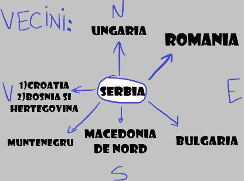
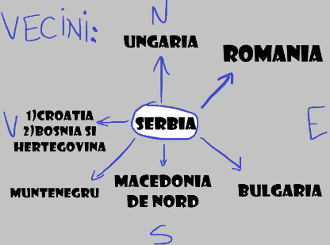

Serbia(Capitala:Belgrad)
Bine ai venit!
 

Descriere sumară:Stat suveran situat la răscrucea Europei Centrale cu cea de Sud-Est,în sudul Câmpiei Panonice și în Balcanii centrali.
Introducere
Serbia,oficial Republica Serbia (sârbă Република Србија, cu alfabetul latin: Republika Srbija [repǔblika sř̩bija]).Țara revendică o frontieră cu Albania prin teritoriul disputat Kosovo. Serbia numără aproximativ 7 milioane de locuitori. Capitala sa, Belgrad, se numără printre cele mai vechi și mai mari orașe din sud-estul Europei.Teritoriul a fost locuit din paleolitic, iar migrațiile slave în Balcani dintre secolele V-VII au dus la formarea câtorva state suverane în Evul Mediu timpuriu, state care uneori au recunoscut în mod nominal suzeranitatea bizantină, francă și maghiară.
Regatul Serbiei a obținut recunoașterea de către Vatican și Constantinopol în 1217, ajungând la apogeu în 1346 ca un Țarat Sârb de relativ scurtă durată.La mijlocul secolului al 16-lea,întreaga Serbia modernă a fost anexată de otomani,dominație uneori întreruptă de Imperiul Habsburgic,care a început să se extindă spre Serbia Centrală pe la sfârșitul secolului al 17-lea,reușind să cucerească și să mențină sub control un cap de pod în Vojvodina modernă.La începutul secolului al 19-lea,Revoluția sârbă a dus la apariția statului național ca prima monarhie constituțională din regiune,care și-a extins ulterior teritoriul.
După pierderile omenești dezastruoase din Primul Război Mondial și unificarea ulterioară a fostei coroane Habsburgice a Voivodinei (și a altor teritorii) cu Serbia, țara a cofondat, împreună cu alte popoare slave sudice, Iugoslavia, stat ce a existat în diferite configurații politice până la războaiele iugoslave din anii 1990.În procesul destrămării Iugoslaviei ,Serbia a format o uniune statală cu Muntenegru care a fost însă dizolvată pe cale pașnică în 2006.În 2008, parlamentul provinciei Kosovo a declarat în mod unilateral independența acestui teritoriu, și a fost recunoscut de majoritatea țărilor membre ONU.
Serbia este membră a ONU, Consiliului Europei, OSCE, PpP, OCEMN, CEFTA și în curs de aderare la OMC.Începând din 2014, țara negociază aderarea la UE cu perspectiva aderării la Uniunea Europeană până în 2025.Din 2007, Serbia aderă formal la politica de neutralitate militară.O economie cu venituri medii spre ridicate,dominată de sectorul serviciilor,urmat de sectorul industrial și agricultura, țara se situează relativ sus pe indicele dezvoltării umane,indicele progresului social,și pe indicele global al păcii.